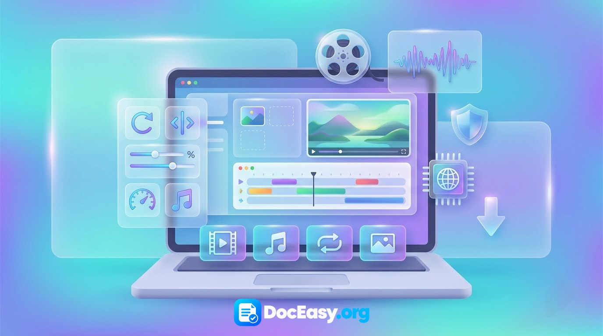

Universal Media Editor
12 media tools in one page — Trim, Mute, Compress, Resize, Rotate, Flip, Speed, Loop, Reverse, Extract Audio, Convert, Extract Frames. No upload, no signup, 100% private.
Drop video or audio here
or click to browse · MP4, WEBM, MOV, MKV, MP3, WAV, OGG · up to 500 MB
Removes the audio track completely. Video stream is copied losslessly without re-encoding.
Plays video and audio backwards. Works best on short clips (under 60 seconds).
✓ Done! Your file is ready.
Download Result🔒 Everything happens in your browser using FFmpeg compiled to WebAssembly. First load takes ~10 seconds.
Comprehensive Technical Guide: Browser-Based Video & Audio Processing (2026)
In modern digital communication, rich media accounts for the overwhelming majority of global network bandwidth. From corporate webinars, academic lectures, and podcast recordings to short-form social video on Instagram Reels, TikTok, and YouTube Shorts, content creators and professionals interact with multimedia daily. However, everyday media editing frequently hits frustrating obstacles: files that exceed email and WhatsApp attachment ceilings, footage captured with inverted smartphone orientation, or multi-gigabyte video recordings that require only an isolated audio track.
Historically, solving these issues demanded installing bulky commercial desktop software suites like Adobe Premiere Pro, Final Cut, or DaVinci Resolve. Beyond steep subscription fees and complex timelines, these heavy tools require gigabytes of local storage and specialized hardware. Alternatively, free cloud-based converter websites compromise personal security by uploading private camera files to remote servers, often enforcing queue throttling, 50 MB limits, and intrusive watermarks.
The DocEasy Universal Media Editor eliminates these compromises. By combining the power of the open-source FFmpeg multimedia framework with cutting-edge WebAssembly (Wasm) runtime technology, it delivers a high-speed, 12-in-1 media manipulation workstation directly inside your web browser. All encoding, stream multiplexing, and filtering processes execute locally on your device with 100% privacy and zero data uploads.

📷 [Demo Image: assets/images/media-editor-demo.jpg]Step-by-Step Tutorial: How to Edit Media Files Online
- Select Your Operation: Choose from the 12 tabs at the top of the interface based on your desired task (e.g., Trim, Compress, Extract Audio, or Convert).
- Load Source Media: Drag and drop your video or audio file directly into the staging zone, or tap to browse your local storage.
- Configure Process Parameters:
- Trim: Enter exact start and end timestamps in standard
HH:MM:SSformat. - Compress: Select your target Constant Rate Factor (CRF) preset and optional downscaling width.
- Extract Audio: Select your desired output container (MP3, WAV, OGG, M4A) and audio bitrate.
- Rotate / Flip: Select rotation angle (90°, 180°, 270°) or mirror axis to correct camera orientation.
- Trim: Enter exact start and end timestamps in standard
- Execute Client-Side Processing: Click the purple "Process File" button. The integrated FFmpeg engine handles the file in your browser's memory, displaying real-time progress.
- Preview and Download: Test the rendered output directly in the integrated HTML5 media player and click "Download Result" to save your clean, watermark-free file.
1. Architectural Breakdown: How FFmpeg Runs Inside Your Web Browser
To understand how DocEasy processes high-definition media without a server, it helps to explore the underlying software architecture. Traditional web applications act merely as file transfer portals: you upload your file, a cloud server executes the processing, and you download the converted file back.
DocEasy operates on an entirely client-side paradigm powered by WebAssembly (Wasm). WebAssembly is a low-level binary code format that executes at near-native speed inside all modern browser engines (Chromium, Gecko, WebKit). The complete C/C++ codebase of FFmpeg—the world's most versatile audio/video processing library—is compiled into a WebAssembly binary.
- In-Memory Virtual File System (MEMFS): When you drop a video into DocEasy, the file is read into an in-memory virtual filesystem inside your browser tab using JavaScript
Uint8Arraybuffers. - Multi-Threaded Execution: The Wasm runtime allocates processing across your local CPU cores, calculating discrete cosine transforms (DCT), motion vectors, and audio filtering locally.
- Blob Instantiation: Once FFmpeg writes the finished file, the data is packaged into a native browser Blob URL for instant downloading. Zero bytes of your original or edited media ever travel across the internet.
2. Exhaustive Analysis of the 12 Media Modules
| Module Name | Underlying Method | Primary Application | Quality & Speed Profile |
|---|---|---|---|
| 1. Trim | Stream Copy (-c copy) |
Isolating specific scenes, removing dead air, cutting video clips. | Lossless & instantaneous (1–3 seconds). |
| 2. Mute | Audio Strip (-an -c:v copy) |
Removing unwanted background noise, preparing silent social b-roll. | Lossless & instantaneous (no re-encoding). |
| 3. Compress | H.264 CRF Quantization | Shrinking 400 MB camera files to under 25 MB for email/WhatsApp. | Tunable: Light (CRF 28), Balanced (CRF 32), Strong (CRF 36). |
| 4. Resize | Scale Filter (scale=w:h) |
Standardizing resolutions (e.g., 4K down to 1080p or 720p). | Bilinear resampling with original audio preserved. |
| 5. Rotate | Transpose Matrix Filter | Correcting smartphone video recorded in the wrong orientation. | Rotates 90°, 180°, or 270° clockwise with pixel accuracy. |
| 6. Flip | Horizontal / Vertical Flip | Un-mirroring selfie camera footage, creative symmetry effects. | Inverts spatial coordinates across designated axes. |
| 7. Speed | PTS Scaling & ATempo Filter | Creating timelapses (up to 4×) or slow-motion (0.25×). | Preserves audio pitch automatically across speed shifts. |
| 8. Loop | Stream Loop Multiplexing | Creating repeated background videos for kiosks, websites, or reels. | Duplicates stream 2 to 10 times into a single file. |
| 9. Reverse | Temporal Reverse Buffer | Playing video and audio backwards for creative effects. | Best for short clips (under 60 seconds) due to RAM usage. |
| 10. Extract Audio | Demuxing & Audio Transcoding | Converting video lectures, interviews, and music clips to audio. | Exports to MP3, WAV (lossless), OGG, or M4A (64k–320k). |
| 11. Convert | Codec Transcoding | Converting between MP4 (H.264), WebM (VP9), and animated GIF. | Cross-platform compatibility with selectable quality tiers. |
| 12. Extract Frames | Temporal Frame Sampling | Exporting high-resolution JPG stills, thumbnails, and storyboards. | Extracts 1 to 10 fps up to user-defined frame limits. |
3. Understanding Video Compression: Constant Rate Factor (CRF)
When compressing video, many free tools force a crude bitrate limit that creates muddy, blocky artifacts during high-motion scenes while wasting data on static shots. DocEasy utilizes Constant Rate Factor (CRF) encoding via the industry-standard libx264 codec:
- How CRF Works: Instead of maintaining a fixed bitrate per second, CRF dynamically allocates data based on scene complexity. Fast-moving sports scenes receive more bits to preserve edge clarity, while static interviews receive fewer bits, maximizing compression efficiency.
- Light Preset (CRF 28): Provides modest 30% to 50% file weight reductions while remaining virtually indistinguishable from the source on standard smartphone and laptop displays.
- Balanced Preset (CRF 32): The recommended default for internet sharing. Delivers 50% to 70% size reduction with minimal visible softening.
- Strong Preset (CRF 36): For strict upload limits (e.g., email attachment caps or messaging apps). Reduces file size by 75% to 85% with some noticeable compression artifacts in dark areas.
4. Audio Codecs & Demuxing: Extracting Pristine Sound
Extracting audio from a video file requires separating the audio stream from the video container (a process known as demuxing) and re-encoding it into an appropriate audio container:
- MP3 (MPEG-1 Audio Layer III): The universal standard. Plays on every smartphone, car stereo, computer, and media player manufactured in the last three decades. Recommended at 192 kbps for music and podcasts.
- WAV (Waveform Audio File Format): Uncompressed Pulse Code Modulation (PCM). Delivers studio-grade, bit-perfect lossless quality, making it ideal for further audio mastering or transcription pipelines.
- M4A / AAC (Advanced Audio Coding): Apple's preferred container. Delivers superior fidelity compared to MP3 at equivalent bitrates (e.g., 128 kbps AAC sounds clearer than 128 kbps MP3).
- OGG / Vorbis: A modern, open-source patent-free audio container commonly utilized in web gaming, Linux environments, and open-source software stacks.
5. Data Privacy & Confidentiality: Why Browser Processing Matters
Video files often contain deeply personal or sensitive visual data: home recordings of family members, confidential business meetings, internal corporate demonstrations, or sensitive legal recordings. Uploading these assets to third-party cloud conversion websites introduces major privacy hazards:
- Server Persistence: Files uploaded to cloud conversion services frequently sit in temporary server directories or caching layers long after processing is complete.
- Data Interception: Transporting raw video files over public networks exposes files to man-in-the-middle sniffing and corporate data breaches.
- AI Model Ingestion: Some consumer online converters reserve rights in their terms of service to scan uploaded media for machine learning datasets.
The DocEasy Protocol: DocEasy completely removes remote servers from the pipeline. The entire media editor runs in your browser's private sandbox memory. Once the initial WebAssembly engine is loaded into your browser cache, the tool can function entirely offline. You can verify this independently: disconnect your Wi-Fi or enable Airplane Mode, and edit your media files freely.
6. Frequently Asked Questions (FAQ)
Q1: Is the Universal Media Editor completely free to use?
Yes. DocEasy is 100% free with no hidden subscriptions, trial expirations, daily usage caps, or watermark overlays on output files.
Q2: Does the editor upload my video or audio files to an external server?
No. All media operations execute locally inside your browser via WebAssembly FFmpeg. Zero video or audio data is ever transmitted across the internet.
Q3: Why does the tool take about 10 seconds to load the first time I click Process?
On your initial use, your browser downloads the compiled FFmpeg WebAssembly engine (~25 MB). Once downloaded, your browser caches it locally, allowing subsequent edits to start much faster.
Q4: What should I do if the browser tab runs out of memory or crashes?
Browser tabs have strict RAM allocations. For very large files (exceeding 300–500 MB), close unnecessary browser tabs and background applications, use Google Chrome or Microsoft Edge (which have superior Wasm memory management), and consider trimming down large files first.
Q5: Does trimming an MP4 video cause any quality loss?
No. Trimming uses stream copy mode (-c copy), which slices the existing compressed video and audio streams at keyframe boundaries without re-encoding frames. The output quality is identical to the original file.
Q6: Can I convert high-definition videos into animated GIFs?
Yes. Select the Convert tab, choose Animated GIF, and process. The tool utilizes an optimized Lanczos color palette generator to output smooth 10 FPS animations suitable for web embedding and social media.
Q7: Can I use this media editor on mobile devices (Android / iOS)?
Yes. The tool runs on mobile browsers that support WebAssembly (Chrome, Safari, Firefox). Because smartphones have less RAM than desktop computers, we recommend keeping mobile video files under 100 MB for optimal performance.
Q8: Can I extract individual still frames from a 4K video?
Yes. Use the Frames tab to sample images at your preferred rate (1 to 10 frames per second). The engine extracts full-resolution JPEG images directly from the video stream.
Q9: Will changing video speed alter the audio pitch?
No. Our speed filter combines presentation timestamp adjustments (setpts) with the atempo audio filter, which speeds up or slows down audio playback while maintaining natural vocal pitch.
Q10: Can I process copyright-protected or DRM-encrypted videos?
No. Videos protected by Digital Rights Management (such as downloads from streaming platforms like Netflix or Disney+) are encrypted and cannot be decoded by browser-based tools.
7. Recommended Multi-Tool Workflow for Content Creators
Media editing often interfaces with other creative and document preparation tasks. Combine DocEasy utilities for an efficient workflow:
- Step 1 — Record Raw Footage: Capture screen demonstrations or webcam reactions using our Screen Recorder or Webcam Recorder.
- Step 2 — Polish and Cut: Use the Universal Media Editor to trim unwanted footage, mute audio, or adjust playback speed.
- Step 3 — Extract Audio for Podcasting: Extract speech tracks directly into MP3 format for audio hosting.
- Step 4 — Compress for Delivery: Shrink finished videos down to balanced CRF file sizes for smooth social sharing or email attachments.
8. Summary
Fast, reliable multimedia editing no longer requires costly desktop software or surrendering your personal files to cloud upload services. The DocEasy Universal Media Editor provides an instantaneous, versatile, and secure video and audio editing suite directly inside your web browser. Bookmark this page today for quick, private media editing on any device.